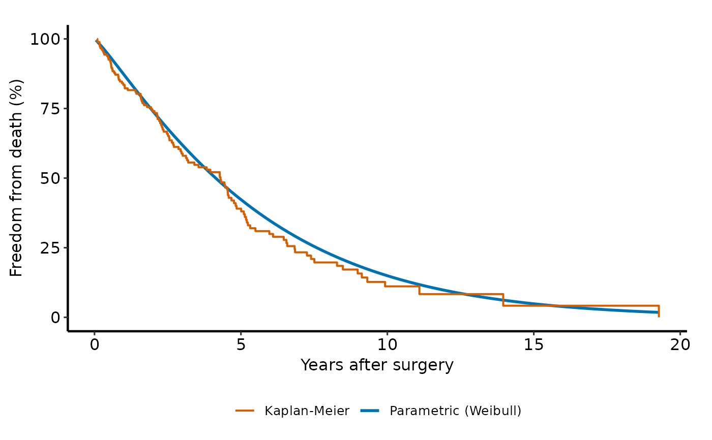
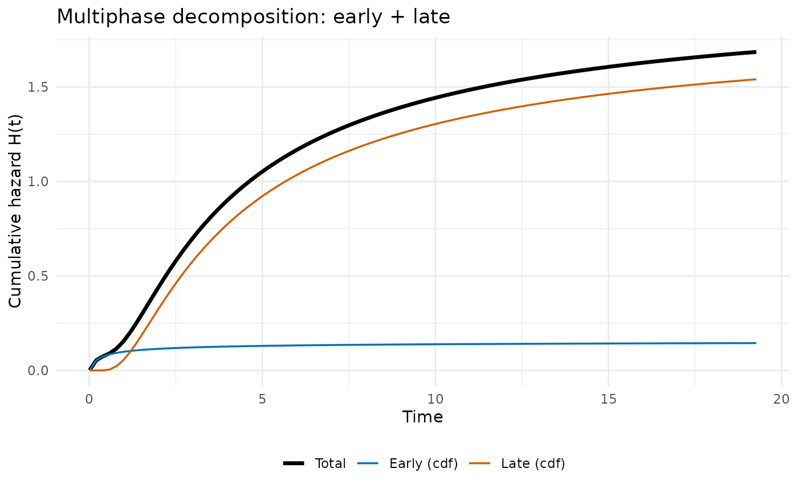

Creates a hazard object and optionally fits it via maximum likelihood.
This mirrors the argument-oriented workflow of the legacy HAZARD C/SAS
implementation: supply starting values in theta and the function will
optimize to produce fitted estimates.
Usage
hazard(
formula = NULL,
data = NULL,
time = NULL,
status = NULL,
time_lower = NULL,
time_upper = NULL,
x = NULL,
time_windows = NULL,
theta = NULL,
dist = "weibull",
phases = NULL,
fit = FALSE,
control = list(),
...
)Arguments
- formula
Optional formula of the form
Surv(time, status) ~ predictors. When provided, overrides direct time/status/x arguments and extracts from data. Example:hazard(Surv(time, status) ~ x1 + x2, data = df, dist = "weibull", fit = TRUE).- data
Optional data frame containing variables referenced in formula.
- time
Numeric follow-up time vector.
- status
Numeric or logical event indicator vector.
- time_lower
Optional numeric lower bound vector for censoring intervals. Used when
status == 2(interval-censored); defaults totimeif NULL.- time_upper
Optional numeric upper bound vector for censoring intervals. Used when
status %in% c(-1, 2); defaults totimeif NULL.- x
Optional design matrix (or data frame coercible to matrix).
- time_windows
Optional numeric vector of strictly positive cut points for piecewise time-varying coefficients. When provided, each predictor column in
xis expanded into one column per time window so each window gets its own coefficient.- theta
Optional numeric coefficient vector (starting values for optimization).
- dist
Character baseline distribution label (default "weibull"). Use
"multiphase"for N-phase additive hazard models (requiresphases).- phases
Optional named list of
hzr_phase()objects specifying the phases for a multiphase model (dist = "multiphase"). See Examples.- fit
Logical; if TRUE, fit the model via maximum likelihood (default FALSE).
- control
Named list of control options (see Details).
- ...
Additional named arguments retained for parity with legacy calling conventions.
Details
Control parameters:
maxit: Maximum iterations (default 1000)reltol: Relative parameter change tolerance (default 1e-5)abstol: Absolute gradient norm tolerance (default 1e-6)method: Optimization method: "bfgs" or "nm" (default "bfgs")condition: Condition number control (default 14)nocov,nocor: Suppress covariance/correlation output (legacy; no-op in M2)
Censoring status coding:
1: Exact event at time
0: Right-censored at time
-1: Left-censored with upper bound at time_upper \(or time\)
2: Interval-censored in the interval \(time_lower, time_upper\)
Time-varying coefficients:
If
time_windowsis supplied, predictors are expanded to piecewise window interactions so each window has its own coefficient vector.This is implemented as design-matrix expansion, so the existing likelihood engines remain unchanged.
References
Blackstone EH, Naftel DC, Turner ME Jr. The decomposition of time-varying hazard into phases, each incorporating a separate stream of concomitant information. J Am Stat Assoc. 1986;81(395):615–624. doi:10.1080/01621459.1986.10478314
Rajeswaran J, Blackstone EH, Ehrlinger J, Li L, Ishwaran H, Parides MK. Probability of atrial fibrillation after ablation: Using a parametric nonlinear temporal decomposition mixed effects model. Stat Methods Med Res. 2018;27(1):126–141. doi:10.1177/0962280215623583
See also
predict.hazard() for survival/cumulative-hazard predictions,
summary.hazard() for model summaries,
hzr_phase() for specifying multiphase temporal shapes.
Vignettes with worked examples:
vignette("fitting-hazard-models") — single-phase through multiphase fitting,
vignette("prediction-visualization") — prediction types and decomposed hazard plots,
vignette("inference-diagnostics") — bootstrap CIs and model diagnostics.
Examples
# ── Univariable Weibull ──────────────────────────────────────────────
set.seed(1)
time <- rexp(50, rate = 0.3)
status <- sample(0:1, 50, replace = TRUE, prob = c(0.3, 0.7))
fit <- hazard(time = time, status = status,
theta = c(0.3, 1.0), dist = "weibull", fit = TRUE)
summary(fit)
#> hazard model summary
#> observations: 50
#> predictors: 0
#> dist: weibull
#> engine: native-r-m2
#> converged: TRUE
#> log-lik: -89.5173
#> evaluations: fn=23, gr=7
#>
#> Coefficients:
#> estimate std_error z_stat p_value
#> mu 0.2190092 0.02728228 8.027524 9.945983e-16
#> nu 1.3389540 0.15829050 8.458840 2.700510e-17
# ── Formula interface with covariates ────────────────────────────────
set.seed(1001)
n <- 180
dat <- data.frame(
time = rexp(n, rate = 0.35) + 0.05,
status = rbinom(n, size = 1, prob = 0.6),
age = rnorm(n, mean = 62, sd = 11),
nyha = sample(1:4, n, replace = TRUE),
shock = rbinom(n, size = 1, prob = 0.18)
)
fit2 <- hazard(
survival::Surv(time, status) ~ age + nyha + shock,
data = dat,
theta = c(mu = 0.25, nu = 1.10, beta1 = 0, beta2 = 0, beta3 = 0),
dist = "weibull",
fit = TRUE,
control = list(maxit = 300)
)
summary(fit2)
#> hazard model summary
#> observations: 180
#> predictors: 3
#> dist: weibull
#> engine: native-r-m2
#> converged: TRUE
#> log-lik: -293.553
#> evaluations: fn=36, gr=8
#>
#> Coefficients:
#> estimate std_error z_stat p_value
#> mu 0.121860518 0.062260594 1.95726558 5.031625e-02
#> nu 1.143730632 0.084302528 13.56697905 6.285984e-42
#> beta1 0.001716551 0.008807986 0.19488579 8.454824e-01
#> beta2 0.156208724 0.090597558 1.72420457 8.467092e-02
#> beta3 0.017352702 0.362918437 0.04781433 9.618642e-01
# \donttest{
# ── Parametric survival with Kaplan-Meier overlay ─────────────────
if (requireNamespace("ggplot2", quietly = TRUE)) {
library(ggplot2)
# Parametric curve on a fine grid at median covariate profile
t_grid <- seq(0.05, max(dat$time), length.out = 80)
curve_df <- data.frame(
time = t_grid, age = median(dat$age), nyha = 2, shock = 0
)
curve_df$survival <- predict(fit2, newdata = curve_df,
type = "survival") * 100
# Kaplan-Meier empirical overlay
km <- survival::survfit(survival::Surv(time, status) ~ 1, data = dat)
km_df <- data.frame(time = km$time, survival = km$surv * 100)
ggplot() +
geom_step(data = km_df, aes(time, survival, colour = "Kaplan-Meier")) +
geom_line(data = curve_df, aes(time, survival,
colour = "Parametric (Weibull)")) +
scale_colour_manual(
values = c("Parametric (Weibull)" = "#0072B2",
"Kaplan-Meier" = "#D55E00")
) +
scale_y_continuous(limits = c(0, 100)) +
labs(x = "Months after surgery", y = "Freedom from death (%)",
colour = NULL) +
theme_minimal() +
theme(legend.position = "bottom")
}

# }
# \donttest{
# ── Multiphase model (two phases) ─────────────────────────────────
fit_mp <- hazard(
survival::Surv(time, status) ~ 1,
data = dat,
dist = "multiphase",
phases = list(
early = hzr_phase("cdf", t_half = 0.5, nu = 2, m = 0,
fixed = "shapes"),
late = hzr_phase("cdf", t_half = 5, nu = 1, m = 0,
fixed = "shapes")
),
fit = TRUE,
control = list(n_starts = 5, maxit = 1000)
)
summary(fit_mp)
#> Multiphase hazard model (2 phases)
#> observations: 180
#> predictors: 0
#> dist: multiphase
#> phase 1: early - cdf (early risk)
#> phase 2: late - cdf (late risk)
#> engine: native-r-m2
#> converged: TRUE
#> log-lik: -321.926
#> evaluations: fn=16, gr=7
#>
#> Coefficients (internal scale):
#>
#> Phase: early (cdf)
#> estimate std_error z_stat p_value
#> log_mu -1.8209827 NA NA NA
#> log_t_half -0.6931472 NA NA NA
#> nu 2.0000000 NA NA NA
#> m 0.0000000 NA NA NA
#>
#> Phase: late (cdf)
#> estimate std_error z_stat p_value
#> log_mu 0.6119202 0.05531211 11.06304 1.895578e-28
#> log_t_half 1.6094379 NA NA NA
#> nu 1.0000000 NA NA NA
#> m 0.0000000 NA NA NA
# ── Per-phase decomposed cumulative hazard ────────────────────────
if (requireNamespace("ggplot2", quietly = TRUE)) {
t_grid <- seq(0.01, max(dat$time), length.out = 100)
decomp <- predict(fit_mp, newdata = data.frame(time = t_grid),
type = "cumulative_hazard", decompose = TRUE)
df_long <- data.frame(
time = rep(decomp$time, 3),
cumhaz = c(decomp$total, decomp$early, decomp$late),
component = rep(c("Total", "Early (cdf)", "Late (cdf)"),
each = nrow(decomp))
)
df_long$component <- factor(df_long$component,
levels = c("Total", "Early (cdf)", "Late (cdf)"))
ggplot2::ggplot(df_long,
ggplot2::aes(x = time, y = cumhaz, colour = component,
linewidth = component)) +
ggplot2::geom_line() +
ggplot2::scale_colour_manual(values = c(
"Total" = "black", "Early (cdf)" = "#0072B2",
"Late (cdf)" = "#D55E00"
)) +
ggplot2::scale_linewidth_manual(values = c(
"Total" = 1.2, "Early (cdf)" = 0.6, "Late (cdf)" = 0.6
)) +
ggplot2::labs(
x = "Time", y = "Cumulative hazard H(t)",
colour = NULL, linewidth = NULL,
title = "Multiphase decomposition: early + late"
) +
ggplot2::theme_minimal() +
ggplot2::theme(legend.position = "bottom")
}

# }